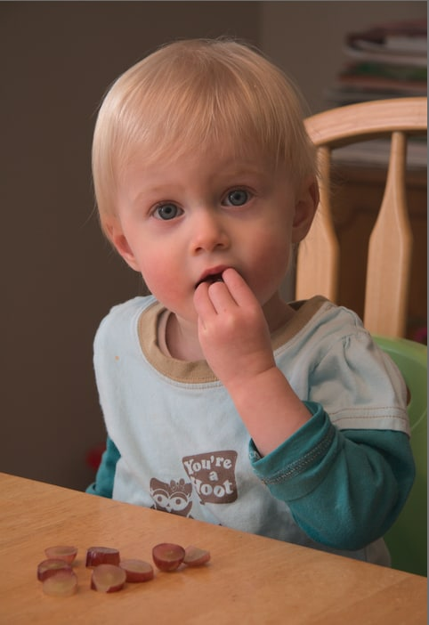

Before coming to Queen E, I attended Major General Griesbach School from kindergarten to grade 9. I earned straight A’s throughout elementary and middle school and participated in many clubs and sports, both in school and my community. One of the sports I played was soccer with the Lago Lindo Community from grade 4 until grade 9. An extracurricular activity I enjoyed for 2 years was the annual Lilac Bloomsday Run in Spokane Washington. My family had joined the Victoria School running club on a road trip to take us to the 12km race in 2018 and 2019. I still engage in many of these fun hobbies, I just had to reprioritize once I came to high school.